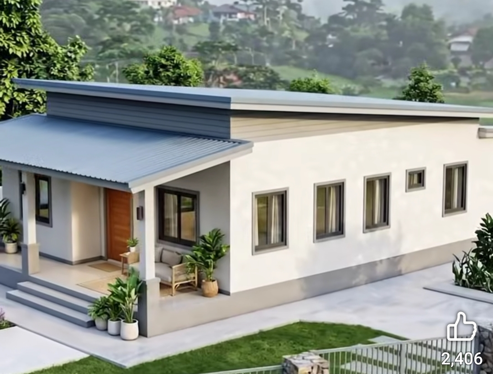
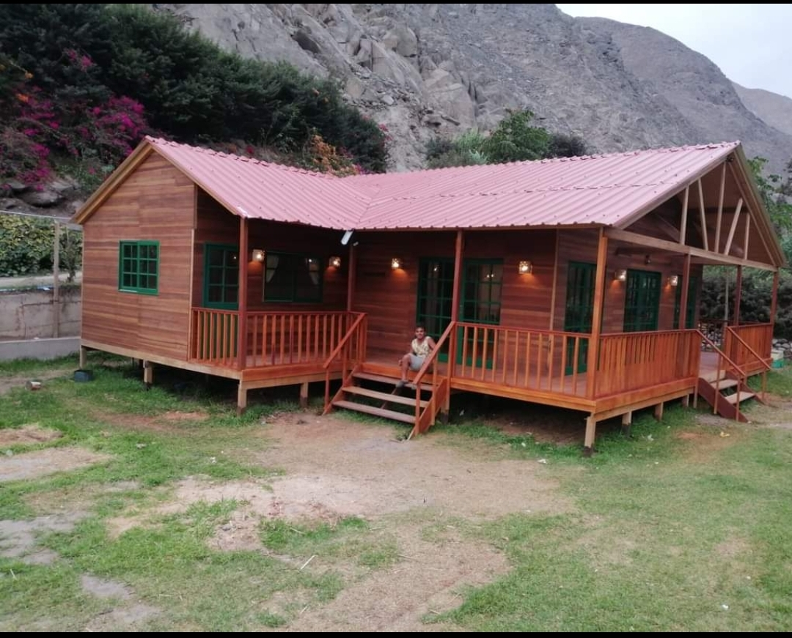
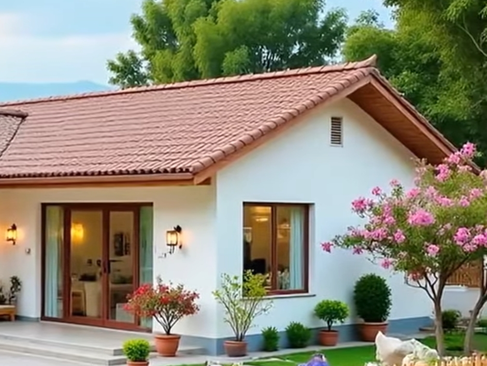

01 / CONTEMPORÁNEASimple por fuera.
Simple por fuera.
Tu mundo por dentro.
Espacios abiertos, luz natural y una imagen limpia para una vida con tu propio ritmo.
Me gusta el estilo modernoCASAS PREFABRICADAS
Explora ideas para elegir cómo quieres vivir. El diseño final, las medidas y los materiales se definen para cada proyecto.
UNA CASA CON TU PERSONALIDAD
Líneas contemporáneas o la calidez de la madera. Encuentra un punto de partida y dale tu propia forma.

Espacios abiertos, luz natural y una imagen limpia para una vida con tu propio ritmo.
Me gusta el estilo moderno
Texturas cálidas, terrazas y rincones para conectar con lo que realmente importa.
Me gusta el estilo rústicoImágenes de la carpeta de Romerito. Los diseños son referencias; consulta las opciones para tu proyecto.

03 / CASA DE CAMPO
Un porche para conversar, una cocina para compartir y espacios que se abren al exterior. Comparte tus ideas y revisemos las alternativas.
Personalizar mi ideaUNA MIRADA MÁS ALLÁ
Referencias internacionales para explorar nuevas formas de habitar.


TU PRÓXIMO CAPÍTULO
Hablemos de tu terreno, tus ideas
y ese lugar que quieres llamar hogar.